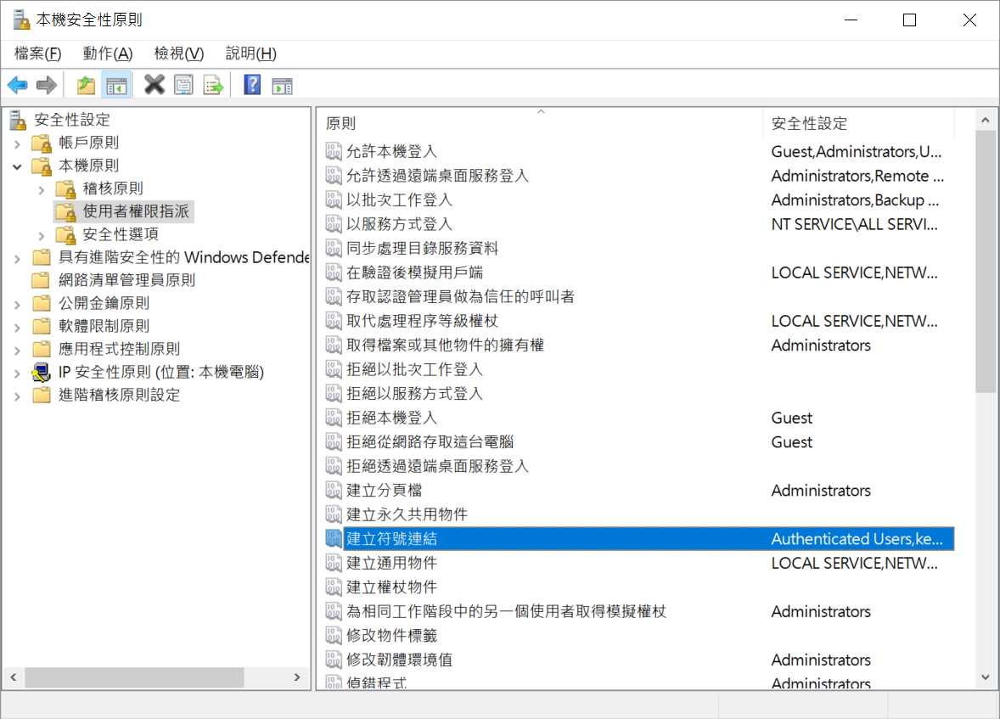
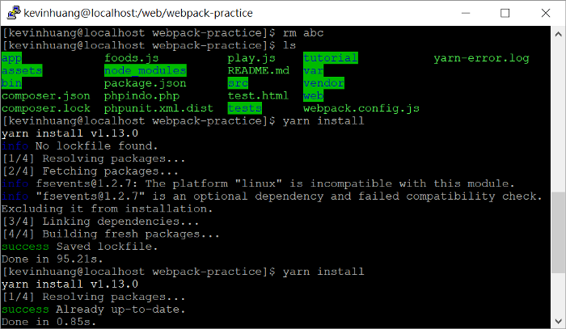

[筆記] Linux共用與Windows資料夾建立軟連結
前言
最近在玩Linux時
在本機Win 10 上裝了CentOS 7
mount 共用資料夾 讓CentOS7 nginx
可以讀到在win 10裡 開發時的Project Folder
但npm和yarn 在install時 碰到了以下的問題:
EROFS: read-only file system, symlink ‘../../../parser/bin/babel-parser.js’ -> ‘/media/web/webpack-practice/node_modules/@babel/core/node_modules/.bin/parser
調查了一下 發現是因為VM mount了資料夾後
卻沒有權限建立link連結
環境
主機: Windows 10
VM: VituralBox 6.0.2r2 -CentOS
解法
首先是Virtual Box的設定
開啟Cmd 執行:
1 | @OracleVirtualBox\VBoxManage.exe setextradata @VMName VBoxInternal2/SharedFoldersEnableSymlinksCreate/@SHAREFOLDERNAME 1 |
@OracleVirtualBox： 這是VirtualBox的預設資料夾。
@VMName： 請修改為你要開啟的VM名稱。
@SHAREFOLDERNAME：修改為VM設定中共用資料夾的名稱
此時試著在你的linux mount的資料夾內建立軟連結
$ ln -s [target] [link]
可能還是會顯示
ln: failed to create symbolic link `LINKNAME': Protocol error
這是資料的權限不足 可以試著用系統管理員開啟Virtual Box
如果還是不行
跟著筆者試試下面的方法:
開啟 windows 的 執行 輸入 secpol 開啟以下畫面

本機原則->使用者權限指派->建立符號連結
將自己目前的使用者加入 進去重新開機後
開啟cmd 測試著建立連結
C:\> mklink /d [link] [target]
完成後 yarn/npm就能順利install專案了
